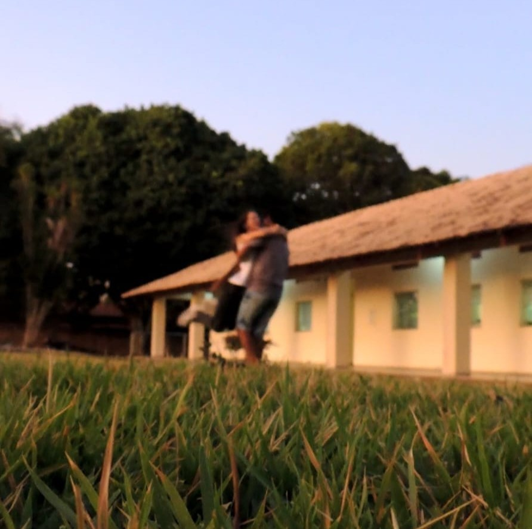
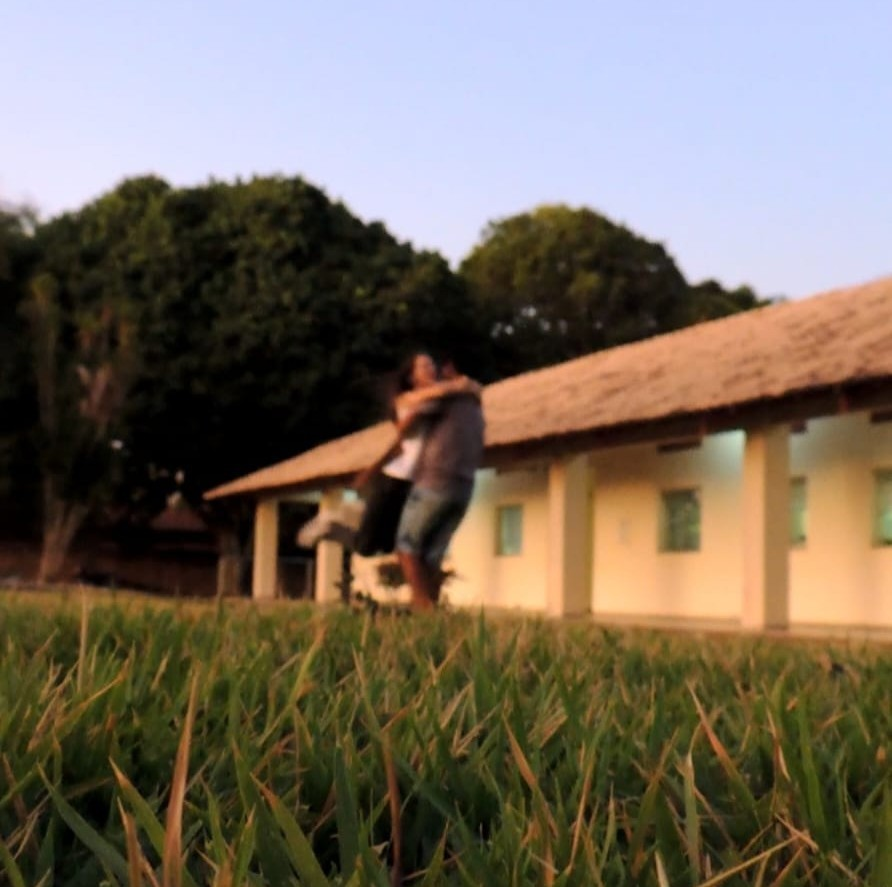

ALUNOS INTERAGINDO NA GRAMA
Students interacting on the lawn
Apresentamos uma nova perspectiva sobre o gramado do campus do IFPA, focando em seu papel como um espaço social. Estas fotos mostram como o gramado não é apenas decorativo, mas um lugar dinâmico onde os alunos se reúnem, relaxam e se conectam. O layout aberto e a atmosfera convidativa são escolhas de design fundamentais que incentivam essas interações. Elas provam que um espaço bem planejado pode realmente moldar nosso dia a dia e promover um forte senso de comunidade.
We present a new perspective on the IFPA campus grassed, focusing on its role as a social space. These photos show how the grass is not just decorative, but a dynamic place where students gather, relax, and connect. The open layout and inviting atmosphere are key design choices that encourage these interactions. They prove that a well-designed space can truly shape our daily lives and foster a strong sense of community.

 
